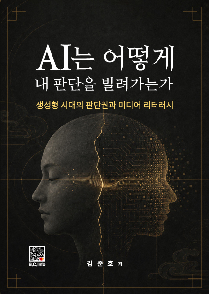

BOOKS · RESEARCH
생각은 기록될 때 다음 판단의 근거가 된다. Recorded thought becomes evidence for the next judgment.
미디어, 생성형 AI, 창작과 교육에 관한 저서와 연구입니다. Books and research on media, generative AI, creation, and education.
PUBLICATIONS
출판된 생각의 몸 Published bodies of thought
각 책은 서로 다른 독자와 질문을 향합니다. Each book addresses a distinct reader and question.
좌우 화살표로 책을 넘겨보세요. Use the arrows to browse the books.


Media
미디어융합과 방송의 미래
김광호, 김준호 외 공저 · 2012

AI Fairy Tale
빨간 고양이 샤론
김준호, 사랑라임맘 공저 · 2024

AI Fairy Tale
핑키의 무지개 마음
김준호, 사랑라임맘 공저 · 2024

AI Fairy Tale
코코의 그린어드벤처
김준호, 사랑라임맘 공저 · 2024

Generative AI
AID 역량 강화를 위한 생성형 AI 활용 콘텐츠 제작 가이드
김준호, 김영희 공저 · 2025

AI Music Video
생성형 AI를 활용한 뮤직비디오 제작 가이드
김준호 · 2025

AI Agent
나만의 AI Agent 만들기
김준호 · 2025
연구 영역Research fields
- 생성형 AI 창작 연구
- 메타버스와 몰입형 교육
- 스마트 양봉과 센서 시스템
- 실감콘텐츠와 XR 교육
특허Patents
- 말벌소리분석을 이용한 벌집문 개폐 시스템 · 10-2847014
- 벌통 내부 꿀벌 이동량 측정 시스템 · 10-2710001
- 웨어러블 생체 진단 장치 · 10-1849857
- 수중 360 VR 영상 촬영 시스템
RESEARCH RECORDS
연구 기록 Research records
논문과 프로젝트를 한 번에 하나씩 선택해 확인할 수 있습니다. Choose one record group at a time: publications or projects.
학위논문 2편을 먼저 제시하고, 공식 서지에서 확인한 학술논문 14편을 이어서 정리했습니다.Two degree theses are presented first, followed by fourteen journal articles verified against official records.
ACADEMIC FOUNDATION
2
학위논문Degree theses
-
박사학위논문DOCTORAL DISSERTATION공식 기록 ↗
온라인 몰입형 교육을 위한 메타버스 플랫폼 개발에 관한 연구: Metaversity 개발 사례를 중심으로
서울과학기술대학교 · 박사학위논문
-
석사학위논문MASTER'S THESIS본인 제공 프로필
동영상 UCC서비스를 위한 가이드라인 개발에 대한 연구
서울과학기술대학교 · 석사학위논문
JOURNAL ARTICLES
14
학술논문Journal articles
-
JOURNAL ARTICLE공식 서지 ↗
프롬프트에서 프로덕션까지 – 생성형 AI로 완성한 1인 창작자의 영상 융합 예술 사례 분석
문화기술의 융합 · 11(4) · 505–518 · DOI 10.17703/JCCT.2025.11.4.505
-
JOURNAL ARTICLE공식 서지 ↗
교육용 메타버스 플랫폼 개발에 관한 연구
방송공학회 논문지 · 28(5) · 505–517 · DOI 10.5909/JBE.2023.28.5.505
-
JOURNAL ARTICLE공식 서지 ↗
여왕벌 사운드 패턴 분석에 대한 연구
문화기술의 융합 · 9(5) · 867–874 · DOI 10.17703/JCCT.2023.9.5.867
-
JOURNAL ARTICLE공식 서지 ↗
A Study on the System for Measuring the Activity of Honeybees Inside and Outside the Beehive
International Journal of Advanced Culture Technology · 10(4) · 511–517 · DOI 10.17703/IJACT.2022.10.4.511
-
JOURNAL ARTICLE공식 서지 ↗
A Study on the Beehive Door Opening and Closing System Using a Hornet Sound Analysis
International Journal of Advanced Culture Technology · 10(3) · 393–396 · DOI 10.17703/IJACT.2022.10.3.393
-
JOURNAL ARTICLE공식 서지 ↗
Development and Analysis of Multi-functional Beekeeping Loading Box Based on Electric Tracked Transport Vehicle
Journal of Biosystems Engineering · 47 · 13–27 · DOI 10.1007/s42853-021-00125-7
-
JOURNAL ARTICLE공식 서지 ↗
비대면 교육을 위한 메타버스 구축 및 활용 사례에 대한 연구
문화기술의 융합 · 8(1) · 483–497 · DOI 10.17703/JCCT.2022.8.1.483
-
JOURNAL ARTICLE공식 서지 ↗
메타버스에서 360° 영상 품질향상을 위한 조명기 투사각 연구
문화기술의 융합 · 8(1) · 499–505 · DOI 10.17703/JCCT.2022.8.1.499
-
JOURNAL ARTICLE공식 서지 ↗
벌통 내부 꿀벌 이동량 측정을 위한 벌집 입·출입 계수 시스템 연구
문화기술의 융합 · 7(4) · 857–862 · DOI 10.17703/JCCT.2021.7.4.857
-
JOURNAL ARTICLE공식 서지 ↗
딥러닝 기반 영상처리 기법 및 표준 운동 프로그램을 활용한 비대면 온라인 홈트레이닝 어플리케이션 연구
문화기술의 융합 · 7(3) · 577–582 · DOI 10.17703/JCCT.2021.7.3.577
-
JOURNAL ARTICLE공식 서지 ↗
Automatic 360° Mono-Stereo Panorama Generation Using a Cost-Effective Multi-Camera System
Sensors · 20(11) · 3097 · DOI 10.3390/s20113097
-
JOURNAL ARTICLE공식 서지 ↗
안드로이드 기반 디지털 사이니지 시스템 개발
전기학회 논문지 P권 · 65(4) · 321–325
-
JOURNAL ARTICLE공식 서지 ↗
모바일 환경에서의 증강현실(AR)기술발전과 디지털 디자인의 능동적 활용 방안
디지털디자인학연구 · 11(2) · 343–357 · DOI 10.17280/jdd.2011.11.2.033
-
JOURNAL ARTICLE공식 서지 ↗
인맥연결 형 네트워크 유형에 대한 사례분석: 싸이월드와 페이스북을 중심으로
사이버커뮤니케이션학보 · 28(4) · 5–47 · UCI G704-001789.2011.28.4.005
교육, XR, AI, IoT를 실제 시스템으로 연결한 주요 연구·개발 이력입니다. Selected research and development connecting education, XR, AI, and IoT with working systems.
- 한국고등직업교육학회 · 동아보건대학교
기술이 아닌 삶을 바꾸는 AI 생활과의 접근 및 스마트 복지
RISE사업 시군 동반성장프로젝트
- 한국교육학술정보원
2022 KERIS 이슈리포트 「대학의 메타버스 활용」
- 한국고등직업교육학회
메타버시티 구축 프로젝트 개발 총괄
- 농촌진흥청
IoT 및 AI 기반 스마트 양봉 관리 시스템 확립 및 사용자 기반기술 개발
농업과학기술 연구개발사업
- 한국콘텐츠진흥원
비대면 휘트니스 에듀테인먼트 서비스를 위한 5G/MR 기반 플랫폼 및 센싱기술 개발
- 한국전파진흥협회
5G 기반 비대면 XR 원격교육 플랫폼 서비스 개발
- 한국콘텐츠진흥원
가상현실 콘텐츠 프론티어 프로젝트 사업
- 한국콘텐츠진흥원
첨단융복합 게임 콘텐츠 제작지원사업
- 중소벤처기업부
수중 360 VR 촬영 시스템 개발
산학연도약개발과제
- 중소벤처기업부
IoT 기반 지게차 안전 보조장치 측정 및 제어시스템 개발
창업성장과제 바우처 기술지원 사업 · 포크무게, 후방거리, 자세제어, 마스트 위치 측정
- 중소벤처기업부
웨어러블 생체진단장치 개발
창업성장과제 바우처 기술지원 사업
- 미래창조부
창조경제혁신센터 연계 융복합콘텐츠 제작지원사업
VR 콘텐츠
- 미래창조부
ITRC 융합과제 – 모바일 VR 기술개발
- 중기청
모바일 청진 시스템 개발
- 중기청
DID 운용시스템 개발
- 에스에프보고플랜트
문서보안 시스템 개발
- 소상공인진흥원
Open API와 Mash Up 활성화 방안 연구
- EBS
디지털 라디오 활성화 방안 연구